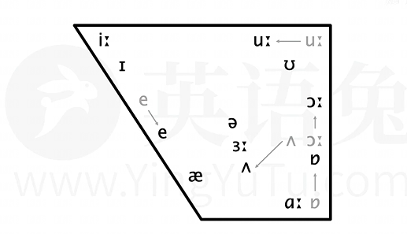

音素是根据语音的自然属性划分出来的最小语音单位。
从声学性质来看，音素是从音质角度划分出来的最小语音单位。
从生理性质来看，一个发音动作形成一个音素。如〔ma〕包含〔m〕〔a〕两个发音动作，是两个音素。
相同发音动作发出的音就是同一音素，不同发音动作发出的音就是不同音素。如〔ma-mi〕中，两个〔m〕发音动作相同，是相同音素，〔a〕〔i〕发音动作不同，是不同音素。
对音素的分析，一般是根据发音动作来描写的。如〔m〕的发音动作是：上唇和下唇闭拢，声带振动，气流从鼻腔流出发音。用语音学术语来说，就是双唇鼻音。
音素一般用国际音标（IPA）标记。国际音标是国际上通行的一种记音符号，由国际语音协会于1888年制定并公布，后经多次修改。用国际音标记音，用于表示发音上的音素细节时，采用“[ ]”，用于标记音位则采用//。音素一般分为元音和辅音两大类。
音标（phonetic symbol）是记录音素的符号，也是音素的标写符号，应用于语言学中，如汉语的拼音字母、英语的韦氏音标和国际音标等。
音标的提出者是H·斯维斯特 P·帕西 琼斯。英语音标中有20个元音，28个辅音，共48个。
音标的制定原则是：以“一符一音”为原则，即“一个音素一个符号，一个符号一个音素”。
国际音标（英语：International Phonetic Alphabet，缩写：IPA），早期又称“万国音标”，是一套用来标音的系统，以拉丁字母为基础，由国际语音学学会设计来作为口语声音的标准化标示方法。
用于标注世界各种语言的发音。直到2005年，国际音标共有107个单独字母，以及56个变音符号和超音段成分。国际语音学学会偶尔会增删一些符号，或者修正某些符号。
DJ音标，全称为Daniel Jones音标，是由Daniel Jones（DJ）在1917年出版的《English Pronouncing Dictionary》中首次提出的。这一音标体系基于国际音标（IPA），但经过DJ的改良和变化，以适应英式英语的发音特点。DJ音标在很长一段时间内成为英式英语音标的代名词，奠定了英语音标的基础。随着时间的推移，DJ音标经历了多次修订和更新，以适应语言的变化和教学的需要。
KK音标是一种美式英语发音的音素音标，它所使用的符号大部分与IPA（国际音标）相符。
KK音标由John Samuel Kenyon及Thomas A. Knott两位美国语言学者根据IPA所编，专门用于描述美国英语的发音，因此也被称为美式音标或K.K.音标。
这套音标系统是从国际音标符号(IPA)中选取适合美式英语的符号，再加上美音特有的儿音，形成了现在广泛使用的KK音标。KK音标包括元音和辅音，其中元音有单元音和双元音，辅音则分为轻辅音、浊辅音、鼻音、似拼音和半元音等多个类别。KK音标表提供了一系列的音标符号和发音技巧，是学习美式英语发音的重要工具。
中国台湾地区多使用KK音标。
| 元音 | 单元音 | 前元音 | /iː/ | /ɪ/ | /e/ | /æ/ | |
|---|---|---|---|---|---|---|---|
| 中元音 | /ɜː/ | /ə/ | /ʌ/ | ||||
| 后元音 | /ɑː/ | /ɔː/ | /ɒ/ | /uː/ | /ʊ/ | ||
| 双元音 | 开合双元音 | /eɪ/ | /aɪ/ | /ɔɪ/ | /aʊ/ | /əʊ/ | |
| 集中双元音 | /ɪə/ | /eə/ | /ʊə/ | ||||
| 辅音 | 爆破音 | 清辅音 | /p/ | /t/ | /k/ | ||
| 浊辅音 | /b/ | /d/ | /ɡ/ | ||||
| 摩擦音 | 清辅音 | /f/ | /s/ | /θ/ | /ʃ/ | /h/ | |
| 浊辅音 | /v/ | /z/ | /ð/ | /ʒ/ | /r/ | ||
| 破擦音 | 清辅音 | /tʃ/ | /ts/ | /tr/ | |||
| 浊辅音 | /dʒ/ | /dz/ | /dr/ | ||||
| 鼻音 | 浊辅音 | /m/ | /n/ | /ŋ/ | |||
| 舌侧音 | 浊辅音 | /l/ | |||||
| 半元音 | 浊辅音 | /j/ | /w/ |
合口”与“集中”代表的是两嘴型的变化：
决定元音的三要素分别为：圆唇度，舌位高低，舌位前后。
圆唇度： 即发音时嘴唇有多圆。
舌位高低： 即发音时舌头隆起的最高点有多高。
舌位前后： 即发音时舌头隆起的最高点有多前。
注意：舌位的前后高低会影响嘴巴的开口度（不是圆唇度），所以口型也是判断元音的间接因素。并不可靠。学习时还是要以舌为主。

bee、fee、pea、read、meat、lead
发/iː/不圆唇，嘴角向两边拉伸，带点微笑的感觉。
是一个舌位前，高的音，开口很小，舌面上抬，靠近硬颚，但不贴到硬颚。
感觉：类似[币]的韵母，但/i:/发音更长。
bit、fit、pit、lit、hit、fish
相对于/i:/来说舌位更低更后，舌头上方空间更大，舌面需上抬，但不要过于靠近硬颚。
和/i:/一样，不需圆唇，嘴巴只要放松微张。
舌头和口腔肌肉不如发/i:/时那么用力，嘴角不像/i:/那样向两侧拉伸。
注意区分，它不仅仅是把/i:/的时长缩短，有些美国人发音舌位会更低。
bed、get、pet、let、met、set
舌位前，中高，舌位比/i:/低，开口比/i:/大，舌头上方空间更大，不需圆唇
bad、fat、pat、lad、mat、sat
音舌位前，较低，比/e/更低，比/a/高（这个/a/只出现在双元音里，舌位很前很低 ）
先发/a/把嘴巴张大，嘴角向两侧拉伸，找到/a/的舌位，再往/e/的舌位调整，舌位向上移动一半感觉：
用发/a/的方式发/e/
另外有些在英式英语中发/ɑ:/的音美式也读/æ/，比如：fast、last、glass.
her、person、learn、bird、word、fur、urgent
音舌位前后高低都基本在中间，不需圆唇
感觉：容易发成[饿]，实际上，[饿]的舌位更高
确保发音时间够长，是重读的长音
a-about balloon、
e-taken problem、
i-family pencil、
o-memory freedom、
u-supply support、
y-syringe analysis
一个舌位前后高低都在中间的元音，被称为中央元音
发这个音,不需要圆唇，嘴自然张开，唇和舌都自然放松，轻吐一口气，让声带振动
如果把这个音重读（舌头和口腔肌肉紧张）并读足时长，它基本就成了/з:/
英语中所有的元音字母（以及半元音字母y ）都可能发中央元音
but、hut、must、son、ton、done
英美发音不同。英音:舌位略低于中央元音；美音舌位和中央元音区别很小。无需圆唇，把[啊]的舌位往上移动一点点。
美音/ʌ/和中央元音/ə/区别在于：
两者一般不做舌位上的区分，区别在于是否重读,在美音中的发音不是在口腔中后方，而是在口腔中间，也就说比英音靠前。
father、fast、glass、car、park、mark
舌位低，后，无需圆唇，开口较大，不咧嘴
和[啊]相似，但不同，[啊]的舌位更靠前，嘴角向两边伸展；/ɑ:/发音更靠近口腔舌根处，发音时长更长。
caught、bought、law、saw、door、four
舌位后，中高，需圆唇，和[哦]基本一样，只是时长更长。
top、hot、lot、box、stop、wash
舌位低，后的音，和/a:/的舌位很像，/a:/不圆唇，/ɒ/要圆唇，时长更短
和[奥]的起始音相似
too、food、loose、prove、moon、soon
舌位后，高，开口很小，需圆唇，但嘴型略扁，和[姑]的韵母基本一致，只是韵母u更加圆唇;嘴巴不能太向前突
book、look、good、took、bush、would
舌位后，高，但相对于/u:/来说，更低更前;
/ʊ/舌头上方空间更大，需微微圆唇，比/u:/更放松，舌头和口腔肌肉不如发/u:/那么用力
不只是把/u:/短着读，两者的舌位和口型都是不一样的。
make、date、cake、safe、play、plane
/e/和/ɪ/一前一后快速紧密发出，发这个音口腔是有变化的。
bike、nice、time、lick、site、life
/a/和/ɪ/一前一后快速紧密发出，发这个音口腔是有变化的，口型更加饱满。
boy、toy、soy、voice、noise、moist
/ɔ:/变短后和/ɪ/一前一后快速紧密发出，发这个音口腔是有变化。
how、cow、allow、house、loud、mouse
/a/和/ʊ/一前一后快速紧密发出，发这个音口腔是有变化的，口型更饱满更长。
open、hope、post、coat、boat、soap
/ə/和/ʊ/一前一后快速紧密发出，发这个音口腔是有变化的，嘴唇有收缩的，英音的起始音位比美音/oʊ/更靠前。
area、idea、various、dear、fear、here
/ɪ/和/ə/一前一后快速紧密发出，发音一定要连贯。
请注意,
hair、pair、chair、fare、care、dare
/e/和/ə/一前一后快速紧密发出，发音一定要连贯。
tour、poor、moor、pure、lure
/ʊ/和/ə/一前一后快速紧密发出，发音一定要连贯。
读音在英音中包含/ʊə/的词基本上都包含字母r，在美音中会r化。
peak beak、
pet bed、
pig big、
rapid rabbit、
lap lab、
speak beak
/ b/是浊辅音，声带振动。
tip dip、
tea deep、
test desk、
tap dab、
bat bad、
bet bed
/ d/是浊辅音，声带振动。在美音中，/d /和/t/一样会有闪音的读法: metal≈medal，鼻音也会影响/d/的读音: abandon.
kit git、
kate gate、
cup gut、
anchor anger、
pick pig、
peck keg
/g/是浊辅音，声带振动。
fat valley、
fit visit、
ferry very、
fest vest、
life drive、
leaf leave
/f/和普通话"夫"的声母，基本一样/v/是"声带振动版"的/f/
sip zip、
soon zoom、
soup zoo、
lesson reason、
once lose、
peace please
英语的/s/，/z/都属于所谓摩擦音，不同于爆破音，
/s/和普通话"斯"的声母(汉语拼音s)一样，/z/和/s/很像，区别就在于/z/发音时声带振动。
three there、
thin that、
thank those、
thigh the、
bath bathe、
breath breathe
和/s//z/一样，属于摩擦音，不同在于舌尖不在上下牙齿后方，而是在上下齿之间，被轻轻咬住，/θ/ /ð/区别在于/ð/需要声带振动。
mesh measure、
fresh pleasure、
leash decision、
attention occasion、
shall usual、
shame regime
/ʃ/ /ʒ/属于摩擦音，/ʃ/ /ʒ/区别在于/ʒ/需要声带振动。
hat、hot、high、home、house、him
舌面后部抬起接近软腭，形成缝隙,让气流向外通过,声带不振动。
rat、red、read、rice、right、room、car、her、ear、bore、tour、pure
美音和英音的区别在于:
当字母r出现在元音之后，字母r往往会让元音r化，
而在英音中则一般不发音或读作中央元音/ə/
chuck jug、
chop job、
choke joke、
cheap jeep、
catch page、
pitch college
/tʃ/可以理解为由/t/和/ʃ/构成,爆破音/t/和摩擦音/ʃ/同时发出，声带不振动。
/dʒ/可以理解为由/d /和/ʒ/构成,爆破音/d/和摩擦音/ʒ/同时发出，声带振动，所以也被称作破擦音。
bats bands、dates deeds、kites kids、fights friends、hats hands、lots leads
/ts/可以理解为由/t/和/s/构成。爆破音/t/和摩擦音/s/同时发出，声带不振动。
/dz/可以理解为由/d/和/z/构成，爆破音/d/和摩擦音/z/同时发出，声带振动。
所以这两个音被归类为所谓破擦音(爆破＋摩擦)
trip drip、true drew、tree dream、try dry、country laundry、pantry hundred
/tr/可以理解为由/t/和/r/构成。爆破音/t/和摩擦音/r/同时发出，声带不振动。
/dr/可以理解为由/d/和/r/构成。爆破音/d/和摩擦音/r/同时发出，声带振动。
所以这两个音被归类为所谓破擦音(爆破＋摩擦)
map nap、
met net、
meet neat、
room noon、
tom run、
lime line、
sin sing、
on long、
sun sung
清晰L：lack lake like look lose leak、
模糊L：help mile all girl school full
英音美音发音区别:
有的包含l的词在英式英语和美式英语中发音不同，比如:million, billion, value
yes、yard、yellow、young、yoga、use
在美式英语中,有些辅音(如/t/，/d/，/n/)后的/j/经常被省略，这个被称作yod-dropping(yod就是/j/)
和之前的辅音经常"合在一起读",这个被称作yod-coalescence，在口语中(尤其是英音口语中)常见, "标准"英语一般尽量避免。有的词中,yod-coalescence已成为标准音，如: educate /'edʒukeɪt/、issue / 'ɪʃu:/ 、azure /'æʒə/
yod-coalescence也适用于单词之间，比如:Nice to meet you! Would you do it?
was、why、wide、wet、we、wood
双唇圈起，向外凸出，气流冲出发音，声带震动，/w/往往听上去像元音/u:/或/ʊ/,所以又被称作半元音，英语w开头的单词基本都是/w/开始。